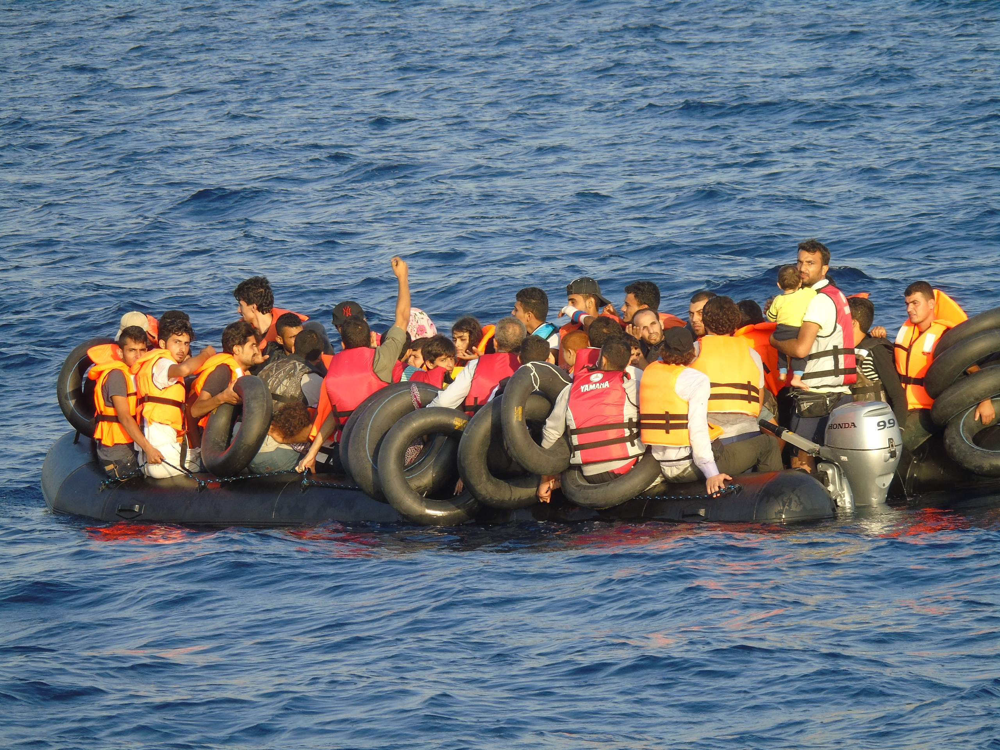
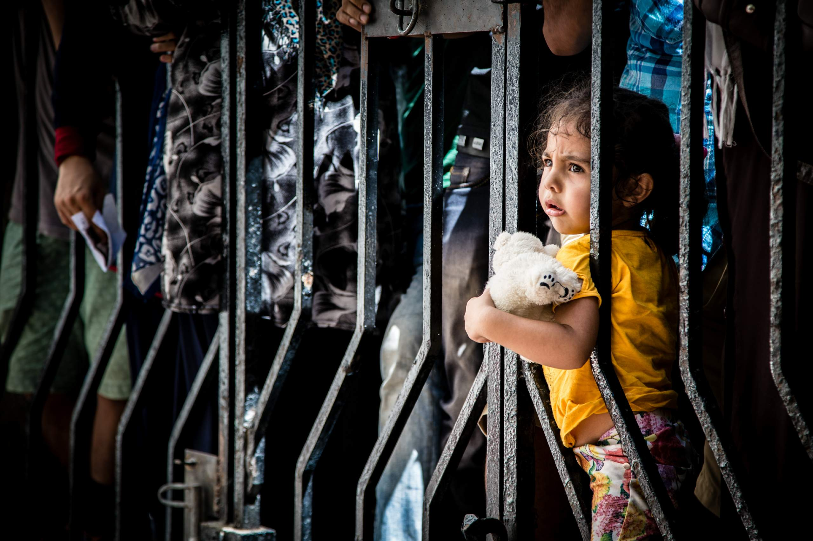
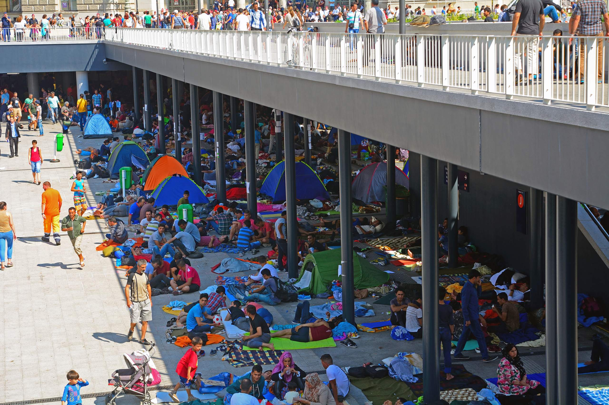
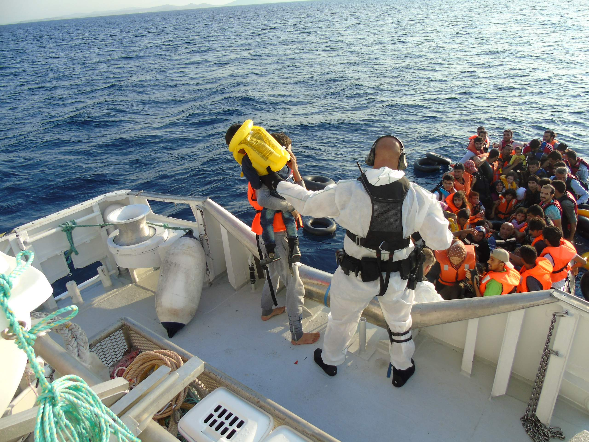

Europe's refugee crisis:
Is Frontex bordering on chaos?
The Bureau investigates the EU's frontline border agency
As Europe’s worst refugee crisis since the Second World War unfolded in May, hundreds of the continent’s overstretched border guards travelled to Warsaw for one of the highlights of their working year.
With the costs of flights and hotels paid by hosts Frontex, the EU border agency, the 800 delegates relaxed for what has become an annual event in their calendars, the European Day for Border Guards.
As the name suggests, it was a one-day affair and featured speeches from high ranking officials, important policy debates, films, exhibition stalls, dog handling displays and an impressive performance by the marching Polish Border Guard Representative Orchestra.
At 7.30pm, according to the published timetable of events, the border guards and other officials reconvened for their annual dinner and party, scheduled to run until 2am.

Putting on a show: Polish Border Guard Representative Orchestra at Frontex's annual European Day for Border Guards. Photo via ED4BG on Facebook
Behind the drinks and the celebrations, there was a clear sense of the escalating crisis – and of the role Frontex should play.
Held a month after an estimated 700 refugees drowned off the coast of Libya, and at a cost of €350,000 – the day’s debates centred on how Europe should tackle the migration crisis and its implications, both for the border-free Schengen area 30 years after it was agreed, and for Frontex itself in its tenth-anniversary year.
But like the rousing music from the Polish marching band, Frontex is arguably more for show than substance – a microcosm of everything that is hampering a pan-European response to the current crisis.
And as EU border management faces its biggest challenge in 20 years – with hundreds of thousands of refugees pouring into Greece, Germany, Italy and Hungary – Frontex is being thrust into the front line of European emergency talks and planning.
Last week, European Commission president Jean-Claude Juncker announced grand plans for the organisation as part of a proposed shake-up of the EU’s fragmented and dysfunctional asylum and immigration policies.
Addressing the European Parliament for his first State of the Union address, he said: “We need to strengthen Frontex significantly and develop it into a fully operational European border and coast guard system. It is certainly feasible. But it will cost money.”
![<i>Jean-Claude Juncker, President of the European Commission. Photo <a href="https://www.flickr.com/photos/european_parliament/16271762142/in/photolist-qMT2Z9-pZMzDU-mHDjjQ-pLqpAX-ptYyyC-pLuF7f-oPBXMB-ptVYh6-ptYyXJ-pLuFA1-oPz1nU-ptYzmE-ptZ7kn-bVDPvA-mHDdf5-mHBjd2-mHBoPM-nJX1Z6-aih1Xu-ai2W5U-pEsPUc-o3ZC3r-o3YBs2-oirrPd-p177ay-pEy87u-niqdy1-nNuR44-mHBkJ8-mHBsrK-mHBhpn-mHBh1B-nBMm7w-mHBw7k-mHBpzp-mHDgDE-aURFUe-mHDj63-mHByWt-xFqJcG-bVDPLG-rnWEea-rC73rS-rEoDB6-rnPdbG-rC724b-rnQk5G-rnQk2W-rm569g-rnWE5T">via</a> European Parliament</i>](./media/16271762142_360743b8c8_o-lr_98pyqmc.jpg "<i>Jean-Claude Juncker, President of the European Commission. Photo <a href=\"https://www.flickr.com/photos/european_parliament/16271762142/in/photolist-qMT2Z9-pZMzDU-mHDjjQ-pLqpAX-ptYyyC-pLuF7f-oPBXMB-ptVYh6-ptYyXJ-pLuFA1-oPz1nU-ptYzmE-ptZ7kn-bVDPvA-mHDdf5-mHBjd2-mHBoPM-nJX1Z6-aih1Xu-ai2W5U-pEsPUc-o3ZC3r-o3YBs2-oirrPd-p177ay-pEy87u-niqdy1-nNuR44-mHBkJ8-mHBsrK-mHBhpn-mHBh1B-nBMm7w-mHBw7k-mHBpzp-mHDgDE-aURFUe-mHDj63-mHByWt-xFqJcG-bVDPLG-rnWEea-rC73rS-rEoDB6-rnPdbG-rC724b-rnQk5G-rnQk2W-rm569g-rnWE5T\">via</a> European Parliament</i>")
Jean-Claude Juncker, President of the European Commission. Photo via European Parliament
Later today as Frontex director, Fabrice Leggeri is questioned in front of MEPs, the Bureau is publishing the results of a three-month investigation into this little understood, and rarely scrutinised European agency.
We have examined its €143m a year accounts and other open source material such as contracts, tenders, speeches, technical reports, as well as interviewing senior officials, politicians and analysts.
Our findings raise deep-rooted concerns about Frontex’s remit and whether – even with a wider role and larger budget – it will ever be able to provide a powerful pan-European response.
We have found an organisation with clear successes (some 173,500 lives were saved last year), and one which is clear about what its role should be. But behind the gloss and the show, Frontex actually has little power and struggles to operate in the straitjacket imposed by the collective failure of member states and Brussels to fully commit and cooperate with it – despite the current crisis.
Frontex may be able to lay on a grand annual event at a cost of €350,000 – the evening dinner alone cost €53,600. But for its operational work, it must beg and borrow from member states It is often under-resourced.
Our investigation has also uncovered official warnings about the way the agency oversees the return of illegal migrants.
And even its intelligence-gathering role is hampered by a lack of member states’ action.
Frontex risk analysis during the past three years correctly predicted a surge of refugee numbers streaming through the central Mediterranean, Greece and Hungary.
The trouble is Europe did not act on its findings.
The consequences of these EU-wide failures has been to create an environment in which thousands of people have drowned at sea and where smugglers have made fortunes from refugees fleeing war.
Crisis hits but resources 'scarce'
An overloaded dinghy in the Mediterranean, seen from a Norwegian ship participating in Frontex's Operation Poseidon
Frontex’s limitations came into focus a month before the annual party. Perhaps because it is described as Europe’s border agency, many perceive Frontex to be an overarching institution exercising supranational powers.
But the reality is that under its current remit, it is restricted to acting as a coordinating agency.
It does not generally own heavy assets. For its border operations, it has to borrow people and equipment, such as vessels and patrol cars, from other countries using its budget to reimburse the member states.
In April, EU leaders agreed to increase its budget by €26.8m to intensify the search and rescue of refugees approaching Europe’s external borders.
The Bureau has discovered that five months later, despite the crisis, some of that money may have to be returned to Brussels because member states have not provided enough equipment and border guards.
The emergency grant was signed-off by EU heads of state at a high-level summit in what was portrayed as Europe uniting in its response to mass tragedies in the Mediterranean.
Such was the subsequent lack of cooperation from member states, Frontex was forced to ask EU Migration, Home Affairs and Citizenship Commissioner Dimitris Avramopoulos to intervene.
Last month, Avramopoulos wrote to all 28 interior ministers urging them to help.
But even that demand from the Commissioner for Migration to senior interior ministers across Europe has not delivered enough border guards and equipment.
![<i>EU Migration, Home Affairs and Citizenship Commissioner Dimitris Avramopoulos at an MEP debate on the EU response to the migration crisis in May this year. Photo <a href="https://www.flickr.com/photos/european_parliament/17898211501/in/photolist-tgB1Ht-bvpJNm-bvonFb-bvooqs-bJibbr-bvonus-bJiazT-bvonS3-sx2wLx-mw9xtk-pbtXNK-q2gkuh-pt8SUk-pbkxn6-pbuD8N-psYp8B-sjxzum-pbk9EJ-pbkTGx-pqXiDq-pbk8E7-fjLNjk-psGZg4-pbmMr4-pbmMZ8-pbtgK7-eDyJUZ-eDyJWK-pbmRdx-pvmTqQ-psBSaR-pguNLi-mubssp-mucHeC-muaRqn-pbusMY-psXsfN-psXscS-pbuLju-pbuLQE-pbtWZF-pbu1NG-psG4Nx-pbEc17-psN9xG-pbusqW-psGNee-pbvcoX-pdTong-pbuv7h">via</a> European Parliament</i>](./media/17898211501_58099499df_o-lr_3opetli.jpg "<i>EU Migration, Home Affairs and Citizenship Commissioner Dimitris Avramopoulos at an MEP debate on the EU response to the migration crisis in May this year. Photo <a href=\"https://www.flickr.com/photos/european_parliament/17898211501/in/photolist-tgB1Ht-bvpJNm-bvonFb-bvooqs-bJibbr-bvonus-bJiazT-bvonS3-sx2wLx-mw9xtk-pbtXNK-q2gkuh-pt8SUk-pbkxn6-pbuD8N-psYp8B-sjxzum-pbk9EJ-pbkTGx-pqXiDq-pbk8E7-fjLNjk-psGZg4-pbmMr4-pbmMZ8-pbtgK7-eDyJUZ-eDyJWK-pbmRdx-pvmTqQ-psBSaR-pguNLi-mubssp-mucHeC-muaRqn-pbusMY-psXsfN-psXscS-pbuLju-pbuLQE-pbtWZF-pbu1NG-psG4Nx-pbEc17-psN9xG-pbusqW-psGNee-pbvcoX-pdTong-pbuv7h\">via</a> European Parliament</i>")
EU Migration, Home Affairs and Citizenship Commissioner Dimitris Avramopoulos at an MEP debate on the EU response to the migration crisis in May this year. Photo via European Parliament
As chaos continues to grip key migration routes, Frontex officials have admitted to the Bureau it “badly need(s) border guards on the Greek islands, border guards and technical equipment on the land border between Greece and Turkey, Bulgaria and Turkey and, crucially along the Hungarian border with Serbia.”
It is along those land borders that analysts now predict a new surge in migrant numbers.
However, offers of key personnel and equipment from member states “are still very scarce”, said a Frontex spokeswoman.
Frontex’s deputy director Gil Arias-Fernández told the Bureau that having the money was “useless” if it did not have the equipment to spend it on.
“This is a pity and it might imply that by the end of the year if we do not gather enough resources we will have to send the money back to Brussels,” he said.
Even before this summer’s build up of refugees, there were already clear signs that member states were not releasing resources to the agency.
Syrians in a refugee camp on the Syrian/Turkish border in 2011
In April, a Frontex report published the results of annual negotiations it has with member states over border staff and equipment.
The report shows shortages of Frontex-requested border staff ranging from 4% to 20% in various roles including first line officers and interview experts.
The cumbersome manner in which Frontex has to negotiate and persuade countries to lend equipment many months in advance has had an impact on operations during the summer’s crises.
![<i>HMS Bulwark, a British ship which went on a search and rescue mission </i><i style="line-height: 20.8px;">in the Mediterranean </i><i>earlier this year. Photo <a href="https://www.flickr.com/photos/defenceimages/8414392948/in/photolist-dPxXSu-qg2dXF-7kJaW1-a3fNp4-brrrB8-dae6Sm-brrrtT-msAtzt-aqieXt-9G1WeX-6Zsvj8-qnycdb-brrrxP-q58Pfq-i9RYkD-7U7uA6-8FcWBD-sHAx7o-nxbrbg-rkQfoJ-aUvkB6-9rxEQq-7UaRJh-dkxktJ-odyRSU-edDJUE-nRru2n-nxaiDz-nMBo1m-o1LGCw-nxbqLi-mZAf5Y-uoYiCQ-bjKCMs-i9SSxn-9rFBWf-82Q2qM-nTqpiK-64ecvP-nPuN1d-nz9hdN-nTqpfZ-nazmeF-i9SUYf-nLGSou-58NFWq-nxcF1t-nxczav-4KTTGF-nPCy5U">via</a> Defence Images</i>](./media/8414392948_7bba4b0e51_o-lr_bbuavv5.jpg "<i>HMS Bulwark, a British ship which went on a search and rescue mission </i><i style=\"line-height: 20.8px;\">in the Mediterranean </i><i>earlier this year. Photo <a href=\"https://www.flickr.com/photos/defenceimages/8414392948/in/photolist-dPxXSu-qg2dXF-7kJaW1-a3fNp4-brrrB8-dae6Sm-brrrtT-msAtzt-aqieXt-9G1WeX-6Zsvj8-qnycdb-brrrxP-q58Pfq-i9RYkD-7U7uA6-8FcWBD-sHAx7o-nxbrbg-rkQfoJ-aUvkB6-9rxEQq-7UaRJh-dkxktJ-odyRSU-edDJUE-nRru2n-nxaiDz-nMBo1m-o1LGCw-nxbqLi-mZAf5Y-uoYiCQ-bjKCMs-i9SSxn-9rFBWf-82Q2qM-nTqpiK-64ecvP-nPuN1d-nz9hdN-nTqpfZ-nazmeF-i9SUYf-nLGSou-58NFWq-nxcF1t-nxczav-4KTTGF-nPCy5U\">via</a> Defence Images</i>")
HMS Bulwark, a British ship which went on a search and rescue mission in the Mediterranean earlier this year. Photo via Defence Images
The inflexibility causes Frontex difficulties ensuring continuity in its emergency operations: member states have been lending equipment for only single months at a time. It means Frontex is often scrambling around for new resources from around Europe every month.
So much so that Frontex relies in part on Iceland, a non-EU country which the agency says has lent more than a third of its entire coast guard fleet to help in Greece and Italy.
Norway, another non-EU country, has been similarly co-operative. The UK lent one major asset to Frontex this summer: HMS Bulwark saved 3,000 lives off Italy during May and June.
But Labour MEP Claude Moraes, the influential chairman of the European parliament’s civil liberties, justice and home affairs committee, to which Frontex reports, described member states’ failure to provide the agency with the necessary resources at this “critical moment” as “scandalous”.
He added: “Frontex is a crucial tool in the response to this crisis and people will therefore be astonished that despite funds being available it’s not adequately resourced so that it can carry out the first tier response.”
![<i>Labour MEP Claude Moraes describes member states response as 'scandalous'. Photo <a href="https://www.flickr.com/photos/european_parliament/10723482033/in/photolist-a3Ahi9-byuDZT-byuDRB-bkzKWu-byuEQc-bkzMib-bkzM8J-byuEFV-bkzLUu-bkzL67-bkzLyW-bkzLu3-bkzLPS-bkzLfQ-bkzLFf-byuEo2-byuDG6-byuEAZ-7VPGcP-hkzCYC-qd8YEC-pVDj7q-pVKLC8-pVDjts-pVChL9-pVM9Rn-pVCjz9-qaUVJE-qaUZjL-pgrrUz-pgrrNx-qd8Y6w-qd8YbS-pgd1X7-pgcYfo-qd8YiW-qdcf3D-qdceZx-pgcYyj-qdchJk-qd8VFS-pgd2e9-hkADBg-qACAko-a4RZJW-a4MdEU-a3BRvB-a3Twhh-9J37pc">via</a> European Parliament</i>](./media/10723482033_ac7ecb17b3_o-lr_eiosfy5.jpg "<i>Labour MEP Claude Moraes describes member states response as 'scandalous'. Photo <a href=\"https://www.flickr.com/photos/european_parliament/10723482033/in/photolist-a3Ahi9-byuDZT-byuDRB-bkzKWu-byuEQc-bkzMib-bkzM8J-byuEFV-bkzLUu-bkzL67-bkzLyW-bkzLu3-bkzLPS-bkzLfQ-bkzLFf-byuEo2-byuDG6-byuEAZ-7VPGcP-hkzCYC-qd8YEC-pVDj7q-pVKLC8-pVDjts-pVChL9-pVM9Rn-pVCjz9-qaUVJE-qaUZjL-pgrrUz-pgrrNx-qd8Y6w-qd8YbS-pgd1X7-pgcYfo-qd8YiW-qdcf3D-qdceZx-pgcYyj-qdchJk-qd8VFS-pgd2e9-hkADBg-qACAko-a4RZJW-a4MdEU-a3BRvB-a3Twhh-9J37pc\">via</a> European Parliament</i>")
Labour MEP Claude Moraes describes member states response as 'scandalous'. Photo via European Parliament
A Frontex spokeswoman said: “Each member state has the sufficient capacity to handle border control, but when the migratory pressure becomes exceptionally high, they might require additional assistance of either technical equipment or specialised border guards.
“The role of Frontex is to coordinate the deployment of such additional assets and human resources from other EU/Schengen Area Countries countries, as described in our founding regulation.”
Regarding the border guard conference, she added: “It provides a forum for discussion and the exchange of best practices, fosters interagency and international cooperation and exchange of information (and) it promotes common standards in training.”
The Turkey delay
The Bureau has also learned that despite more than two million refugees amassing in Turkey and planning their dangerous trips across the borders, Frontex has not had a single member of staff based there gathering intelligence about smugglers.
A “liaison officer” post was signed off by Brussels 18 months ago, but Frontex has only just advertised the job.
Frontex, in part hampered by EU rules requiring it to cut headcount elsewhere, said it did not have the budget until only recently. The liaison officer job ad states an annual salary of €42,588.
'There isn’t much Frontex can do'
An Iraqi girl, Farah, on the Greek island of Kos. Photo via the International Federation of the Red Cross
When the Single Currency was mooted over 40 years ago, experts warned that a monetary union could not operate properly without a full political union.
The scale of the migration crisis points to a familiar theme: that Frontex in its current guise could be another EU institutional fudge. Frontex’s own leaders believe a fully functional border agency can only exist if given executive powers to demand or own equipment, and alongside other harmonised areas of EU policy.
Though Europe has faced severe refugee crises in its recent history – most notably during the breakup of Yugoslavia – part of the problem is that Frontex was not constituted to deal with a mass surge of migrants. It was created in relatively calmer geopolitical waters, several years before the Arab Spring of 2011.
To Giorgos Stathakis, who until three weeks ago was Greece’s Minister of Economy, Infrastructure, Shipping and Tourism, Frontex’s current structure and legal mandate renders it unfit to deal with the crisis affecting his country: “There isn’t much Frontex can do,” he told the Bureau. “It’s not about illegal migrants. It’s about a different kind of migration. We are dealing with a vast number of war refugees."
“Frontex’s problem is that they were designed to protect from illegal migration. That is a different profile from what we’re seeing."
Arguably, Frontex is also a convenient smokescreen for political inaction on migration by member states: the existence of the agency gives the appearance of collective operations without the resources and remit to be meaningful.
In fairness, Frontex’s former director recognised the constraints for several years.
A Frontex document unearthed by the Bureau from 2010 celebrating the agency’s fifth anniversary contains "a question and answer" session with its then director, Ilkka Laitinen, a Finnish general who left his post last year but who still sits on its management board.
Asked “how important is a common immigration policy for the EU”, he replied: “Very important. I see no alternative, because we have Schengen, we don’t have internal border controls in place. “The playing field is open. We cannot simply take the national approach to this.
“We have to think European-wide. …we still have very nationally oriented approaches to things, such as deciding eligibility for asylum. As long as this fundamental question of immigration is not European-wide, we will continue to have to deal with it.”
And in a remark that speaks to the current European refugee crisis response, Laitinen stated: “We have had to cancel some maritime operations because there was no solution about what to do with people who have been picked up or rescued.
“So I see no choice but to have a common policy. However, it is quite a challenge for citizens to start thinking in a more European way. It will take a long time.”
Five years after that interview, Juncker last week decided the time has come for Europe to have a common immigration and border policy with a more powerful Frontex at its heart.
More Europe. More Union
A Syrian man crosses from Serbia into Hungary through a razor wire fence. Photo via Freedom House

The concept of “integrated border management” has been a goal of Brussels policymakers for decades.
The origins of Frontex lie in the signing of the historic Schengen Agreement in 1985 when five of the then 10 member states of the European Economic Community proposed the gradual abolition of border controls.
Ten years later, that proposal started to become a reality when the larger European Union, with the exception of the UK and Ireland, removed border checkpoints.
From Greece in the continent’s southeast to Sweden in the north, goods and people started to move freely across national borders.
Non-EU states including Norway, Iceland and Switzerland subsequently signed up.
Schengen area. Photo via Frontex
But while member states retained, and still do retain, sovereignty and responsibility for their own land, sea and air borders, the question of how to police a common passport free area was pushed to the forefront of the political agenda.
In December 2001, three months after the 9/11 atrocities in the US, the issue took on greater urgency at a Council of Europe meeting in Belgium.
The final conclusion of EU leaders read: “Better management of the Union’s external border controls will help in the fight against terrorism, illegal immigration networks and the traffic in human beings.”
The European Commission was directed to examine the matter. Five months later, it issued its own communication.
Using the kind of language that infuriates Eurosceptics, it said “coherent and effective common management of the external borders” would “boost security and the citizen’s sense of belonging to a shared area and destiny”. Some worried it was a political Euro-federalist project.
In November 2003, the Commission formally proposed a new ‘European Agency for the Management of Operational Co-operation at the External Borders’.
The Commission said this new agency would be crucial for “integrated border management”.
It would train national border guards to a common standard. It would hold seminars and networking events, it would research surveillance methods and carry out risk assessments at border weakspots.
On the question of dealing with irregular migrants the agency would help coordinate the return of those who living illegally in the EU and “render assistance” to member states “confronted with circumstances requiring increased operational and technical assistance at the external borders”.
Crucially, there was no mention of search and rescue in these founding principles.
But in 2006 Frontex was confronted with its first crisis when tens of thousands of migrants from west Africa arrived in the Canary Islands.
It coordinated its first joint operation involving Spain, and the numbers of migrants attempting to enter the Canaries, partly due to Frontex run maritime patrols, has stayed low to this day.
Arab Spring
In 2011, as instability from the Arab Spring rippled across the Med, EU leaders decided Frontex needed extra powers to boost its operational activities.
It was allowed to increase the size of its own “rapid deployment” European border guard teams, seconded from member states but wearing Frontex armbands on their national uniforms. (In total, 2,900 men and women are now registered as members of the European Border Guard Team.)
Frontex member on joint patrol with Greek police. Photo via
And it was put in charge of managing a list of technical equipment – patrol vessels, surveillance planes, vehicles and dog teams – that would also be pooled from member states via biannual negotiations.
It was a tentative move towards increased autonomy and an attempt to provide the tools for emergencies.
Frontex’s role in emergencies came into sharp focus in April. Days after an estimated 700 refugees drowned off the coast of Libya, EU leaders moved to triple the budget of two Frontex patrol and surveillance missions - Triton and Poseidon Sea.
The Poseidon operation concentrates on the eastern Mediterranean. It is the land aspect this mission that is currently facing acute shortages of border guards and equipment, such as patrol cars.
Search and rescue
The current migration crisis is not the first time EU states have failed to work together, and not the first time Frontex has been buffeted by events.
Midway through last year, the Italian government issued a plea for help. Since October 2013, it had been running Operation Mare Nostrum, a naval search and rescue mission off its southern waters and near the coast of Italy. It was successful but costly.
The European Commission provided some funds but Rome asked other EU states to contribute. It warned the operation would be cancelled if no money was forthcoming.
But other EU leaders argued Mare Nostrum encouraged migrants and refugees to make risky sea crossings. They refused to give any money and the mission discontinued in October last year.
Frontex leaders had been well aware of the implications. They had received a dire warning at their border guard conference in May 2014 when Giorgos Tsarbopoulos, the head of the UNHCR’s office in Greece, railed against European policy makers.
“We will have another Lampedusa tragedy when Italy will not be able to continue the big operation it’s carrying out today,” he told the 800 delegates.
In an attempt to avoid such a disaster, Frontex was called in, but it had a much smaller budget.
It meant Mare Nostrum’s replacement, the Frontex-run Operation Triton, was much smaller in size. It was also given a reduced remit, with the emphasis being on “effective border control and at the same time to provide assistance to persons or vessels in distress”.
Five months into the new operation, as hundreds of lives were lost at sea, it became clear a larger scale response – and a bigger emphasis on search and rescue – was required.
So almost a year after EU states began to reject bailing out Mare Nostrum, they had to triple the budgets of Triton (and its other maritime operation in Greece, Poseidon Sea).
Follow the money
Refugees at the Keleti Railway Station on 1 September 2015 in Budapest, Hungary
The expansion and evolution of Frontex’s remit has been mirrored by budget increases. In its first full year of operations it had a budget of €19m and that has grown to €143m in 2015, a rise of 46% on 2014.
In total, it has received €862m of European taxpayers’ money since it was formed and in that time the number of people working at its Warsaw HQ has grown from 72 to 304.
Frontex receives over 90% of its current budget from the Commission, while the UK, which does not sit on the organisation’s management board, contributes €570,000. Norway gave €2.2m this year and Switzerland €3m.
The bulk of Frontex spending goes on its operations by paying countries for the equipment they lend, with ocean patrol vessels being its most costly items. However, these bills are relatively fixed in that they are determined by EU rate cards setting out what countries can charge for cars, personnel and fuel.
A Bureau analysis of the reimbursements issued by Frontex shows that in the seven years to 2014, more than €350m was reimbursed to 43 countries – including Schengen area states and others such as Albania and Turkey – for personnel and equipment.
Italy and Spain between them received more than €100m, reflecting the large number of boats and people they deployed to spot and rescue migrants and refugees in the Mediterranean.
Greece was compensated €28.6m in the period, while Iceland, which currently provides two large coast guard ships and crew and one aircraft, was reimbursed €21.8m over the seven year period.
Austria received €20m, while Germany and Portugal received €19m and €18m respectively. In contrast, the resources the UK provided for Frontex operations were worth €3.2m over seven years.
When it comes to spending on itself – on its staff, headquarters, publicity and branding, for example – Frontex has more discretion.
A Bureau examination of its accounts and contracts has found eyebrow-raising items.
As with all other EU institutions, there is a high proportion of relatively more expensive senior expatriate staff.
Of the 304 people employed in Warsaw on June 1 this year, 185 were non-Polish nationals.
The total wage bill in Warsaw is about €20m, with €1.5m paid out each year for expatriation allowances, another €1.3m for “family allowances” such as school fees, while €165,000 was spent last year flying people home for their annual leave.

Frontex moved offices last year to the Warsaw Spire, seen here nearing completion in August 2015. Photo via
{kind=link}
Significant chunks of the Frontex budget is also reserved for parties and other social events.
Last year, Frontex awarded a contract worth €22,000 for a staff Christmas party at the top class Palac Prymasowski restaurant in Warsaw where 350 employees and their spouses celebrated the year end.
The Bureau also identified a contract worth €17,500 for eight chairs awarded to a furniture company in Finland in 2014. A Frontex spokeswoman said they were “black leather chairs with a trimension mechanism and a minimum warranty period of five years”.
Over the past two years alone, Frontex has also budgeted €137,000 for ‘Corporate Identity’.
This included one contract worth €38,500 to a Warsaw stationery company; according to the company’s invoice, Frontex paid €9,100 for 400 Parker pens and pencils, and another €5,160 for 4,000 Frontex logoed key rings.
And last December, Frontex incurred at least €1.8m of additional costs when it relocated its entire headquarters operation into Poland’s newest landmark building complex – the glass-clad Warsaw Spire centre where office neighbours include a leading international investment bank.
Aerial surveilllance
Part of Frontex’s problems over the past 10 years has been a reliance on member states for equipment, but among the more recent tender documents seen by the Bureau, one contract suggests a change in direction.
Issued on April 11, it is a four-year deal to provide aerial surveillance services assets and expert support”. Open to private companies, the tender is worth €10m.
The tender document states the objective is to “enhance surveillance operational capability in areas of the EU external border”.
The aircraft to be used could include drones and the winning bid has not yet been announced. It would add to Frontex’s surveillance capabilities, the centrepiece of which is Eurosur, which uses satellite and other systems to gather intelligence about illegal activity at the borders.
At the European Day for Border Guards in Warsaw in May, European Commissioner Avramopoulos said: “The roll-out of Eurosur has provided a good model on which to build. Eurosur should be fully utilised by all civilian and military authorities with a responsibility for maritime border surveillance.”
The new aircraft contract would mean Frontex more in control of its own assets.
Political football
Roderick Parkes, an EU expert at the Swedish Institute of International Affairs, has studied Frontex in depth.
He said the organisation is staffed with excellent strategic thinkers but it has become a political football.
Countries in the north, he argues, use it to ensure southern states adopt their border control standards. Southern countries see it as both an agent of control and a cash cow.

Roderick Parkes, EU expert at the Swedish Institute of International Affairs, who has studied Frontex in depth. Photo via Polish Institute of International Affairs
“Frontex can certainly be more proactive in some areas,” he said. “They have power to send liaison officers to work in other countries. They have not used that. They are finally sending people to Turkey.
“They struggle to use their toolbox. They’re allowed to push for commitments such as more personnel and equipment. They have not been strong enough. Budgets keep increasing but they don’t get funneled into human resources.”
Forced returns
Chartered planes take failed asylum seekers back to their home countries. Photo via Flickr, stock image of plane taking off
One of Frontex’s principal roles is helping countries organise the return of failed asylum seekers, overseas prisoners and people whose visas have expired back to their country of origin.
Since 2006, it has arranged the return of more than 15,500 people in 302 separate missions from European member states.
Although this is only a small fraction of the 1.3 million removed from Europe by individual countries since 2008, Frontex’s involvement is now almost certain to increase.
In May, the Commission published its Agenda on Migration. This suggested Frontex’s role returning failed asylum seekers and migrants will be strengthened depending on the outcome of an ongoing evaluation into the organisation.
The Commission proposal marks a significant change of emphasis. No longer will Frontex support member states returning migrants. Rather it will take the lead.
The proposal has been repeatedly backed by Juncker and other senior Commission officials to the point that its enhanced responsibility in this area is almost taken as read by Frontex senior managers.
But how Frontex currently organises the return of refugees and migrants worries MEPs and human rights campaigners.
Emily O’Reilly, the EU Ombudsman, told the Bureau that Frontex has “significant room for improvement” in its forced return operations.
In a report filed in Brussels four months ago, she found not enough was done to ensure pregnant women and children were separated from potentially volatile adult returnees, as well as the absence of independent monitors on a large number of joint operations it organises.
O’Reilly’s report prompted a closed-door session at the European Parliament building in June in which Frontex director, Fabrice Leggeri was grilled about the issue.
![<i>EU Ombudsman Emily O'Reilly, who filed a report on Frontex joint return operations four months ago. Photo <a href="https://www.flickr.com/photos/european_parliament/9077789460/in/photolist-hRYgTW-qqXLti-q9p5Vo-f21w36-f1WrKt-ovZ4kQ-oxJWe6-oxJYjt-52qq8n-52uMXh-8wX93K-dc692A-peuw9z-eQb3xo-7zGFby-ipa6hz-7zB37X-7zCoav-7zBYnt-7zCHa6-7zG4bE-7zBf9x-7zEC4S-7zz7NZ-7zAs4X-7zGcMN-7zAET6-7zGApN-7zFAc5-7zGh6Y-7zAvYr-7zBwCV-7zC4Le-f5ZP3i-f5ZPBH-f6f5gG-f5ZNXc-efExGg-f6f5nY-f6f541-f6f4NG-f5ZNNc-f5ZPfZ-f6f4CN-kT4b7-kT4iP">via</a> European Parliament</i>](./media/9077789460_ca5b14c683_o_ububt7n-lr_5wopsr5.jpg "<i>EU Ombudsman Emily O'Reilly, who filed a report on Frontex joint return operations four months ago. Photo <a href=\"https://www.flickr.com/photos/european_parliament/9077789460/in/photolist-hRYgTW-qqXLti-q9p5Vo-f21w36-f1WrKt-ovZ4kQ-oxJWe6-oxJYjt-52qq8n-52uMXh-8wX93K-dc692A-peuw9z-eQb3xo-7zGFby-ipa6hz-7zB37X-7zCoav-7zBYnt-7zCHa6-7zG4bE-7zBf9x-7zEC4S-7zz7NZ-7zAs4X-7zGcMN-7zAET6-7zGApN-7zFAc5-7zGh6Y-7zAvYr-7zBwCV-7zC4Le-f5ZP3i-f5ZPBH-f6f5gG-f5ZNXc-efExGg-f6f5nY-f6f541-f6f4NG-f5ZNNc-f5ZPfZ-f6f4CN-kT4b7-kT4iP\">via</a> European Parliament</i>")
EU Ombudsman Emily O'Reilly, who filed a report on Frontex joint return operations four months ago. Photo via European Parliament
So-called Joint Return Operations (JROs) take place when a large number of foreign nationals from one specific country whose visas may have expired or whose asylum applications have been rejected are scattered in various EU countries.
In these instances, Frontex identifies other EU countries which also have migrants from the same country. It then organises collections of returnees which it co-finances by chartering planes and organising stop-offs in various EU countries en route to the final destination.
Last year Frontex co-ordinated 45 returns on which 2,279 migrants were deported costing a total of €7m.
Deportation is often extremely tense. Immigration centres regularly experience volatile activity but human rights abuses are often kept under wraps.
Joint return adds a layer of complexity to operations as they involve multiple countries where human rights standards may vary.
But the EU Ombudsman found that 40% of all joint returns have no independent observer monitoring them.
The Ombudsman also castigated Frontex for having no complaints mechanism for returnees to access.
Speaking to the Bureau, O’Reilly said that Frontex needs to ensure that “in any intensification of return operations, it is important that we maintain EU fundamental rights standards”.
O’Reilly conceded the agency “has done a lot to date to train national escorts and to comply with existing human rights standards” but it requires “significant room for improvement”.
O’Reilly put Frontex on notice that her office will continue to monitor its involvement in JROs and added: “Abuses also occur during the preparation of deportees for flights and this is where the presence of independent monitors is crucial. If there is to be an intensification of these flights and if Frontex is allocated more powers as regards return operations, the involvement of independent monitors is not yet clear."
In its response to the EU Ombudsman, Frontex maintained that in the nine years it has been returning migrants it has never received one complaint.
“Frontex is fully committed to ensuring that highest standards are respected in joint return operations,” its spokeswoman said. She added that guidance in this area is currently being revised in consultation with a wide number of human rights group and EU member states.
“Frontex provides regular trainings, including the topic of fundamental rights, to JRO escort leaders and national escort multipliers to ensure that best practices are implemented and that returns are conducted in highest respect of fundamental rights. Our Return Operations Sector works closely with the Frontex Fundamental Rights Officer who has full access to both training sessions and joint return flights and actively contributes with her comments to all return related activities.”
A new era for European border management
Rescued: Members of the National Criminal Investigation Service of Norway help people in the Mediterranean as part of Frontex's Operation Poseidon. Photo via
Details of what new powers the Commission is lining up for Frontex are sketchy. Last week, the agency referred our inquiries on this matter to Juncker’s office which declined to comment beyond saying firm proposals are expected by the end of the year.
But the Bureau has discovered that an external evaluation into Frontex undertaken by Danish firm, Rambøll Management Consulting is scheduled to be published next month and should provide clues to the organisation’s future.
It is widely expected that Frontex will be given the legal mandate to co-ordinate search and rescue missions in the Mediterranean and play a far more active role by initiating the return of migrants and failed asylum seekers.
It is also highly likely Frontex’s budget will be further increased having been given two separate increases in the past nine months.
Speculation will also centre on whether the agency will be allowed to directly employ its own border staff and control its own boats, planes and motor vehicles instead of effectively begging member states to lend it resources.
In June last year, the Home Affairs directorate of the European Commission published a “study on the feasibility of the creation of a European System of Border Guards to control the external borders of the Union”.
The report was the result of extensive consultations with Frontex, the European Parliament and members states and highlighted the different goals among them.
It recommended a phased approach to giving the EU full powers over borders, particularly at “hotspots”, over the longer term.
But the authors also reported resistance. The report said: “Whereas both Frontex and members of the European Parliament advocated for a more integrated border management of external Schengen borders with more powers acquired at EU level, Member States were supporting a more careful approach.
“Most of them agreed that the current opportunities provide a number of measures to improve the border control activities and should thus be fully exhausted before taking new initiatives towards further integration.
“In their view, Frontex should perform the supportive and coordination role in joint return operations, training activities and negotiation of readmission agreements.
“They however feel that there is currently neither immediate need nor legal possibilities to shift the responsibility for external EU borders from national to EU level.”
Juncker has decided the time has come for Europe to have a common immigration and border policy with Frontex at its heart.
At the European Parliament last week, Juncker promised to release the money, saying: “The Commission believes this is money well invested. This is why we will propose ambitious steps towards a European Border and Coast Guard before the end of the year.”
At next May’s European Day for Border Guards, it is certain delegates, their experience shaped by the events of 2015, will have firmer ideas on how Frontex should look for the next 10 years.
But whether the latest crisis is enough to make the necessary fundamental shift in thinking at member state level when they already baulk at merely lending equipment is now very much a key question.
Migration in numbers
Refugees and migrants follow eight main routes to get into the EU.
Since 2006 more than a million migrants and refugees have been recorded crossing into Europe in what Frontex calls "detected illegal border crossings".
Between January and July this year there were 338,083 such crossings according to Frontex data.
132,240 people came in small boats from Turkey to Greece on the Eastern Mediterranean route.
102,342 travelled via the Western Balkan land route from Turkey or Greece to Hungary.
91,302 crossed the Mediterranean on perilous boat journeys from North Africa to Italy or Malta.
Frontex explainer
Frontex is located in Warsaw, Poland. It currently has a €143m budget. Its main tasks are to:
- Coordinate operational cooperation between member states managing external borders.
- Assist member states in the training of national border guards, including the establishment of common training standards.
- Carry out risk analysis.
- Follow up the development of research relevant for the control and surveillance of external borders.
- Assist member states in circumstances requiring increased technical and operational assistance at external borders.
- Provide member states with the necessary support in organising joint return operations.
- As of 1 June 2015 there were 304 staff members, among them 185 non-Polish nationals (52 Temporary Agents, 63 Contract Agents, 70 Seconded National Experts).
- Between them, the Frontex wage bill comes to €20m – an average of €65,789 each.
- Of its operational budget, the largest spend is on “joint operations and pilot projects” at Europe’s sea borders.
- Sums of €9m each are spent on managing external land borders, the return of migrants and the operation of Frontex’s computer intelligence system.
- Other than its Warsaw headquarters, it currently has an office in Piraeus, Greece. With other European agencies such as Europol it will soon be opening new “hotspot” migration process centres in Greece and Hungary.
For more stories like this follow @TBIJ or sign up for email updates.
thebureauinvestigates.com